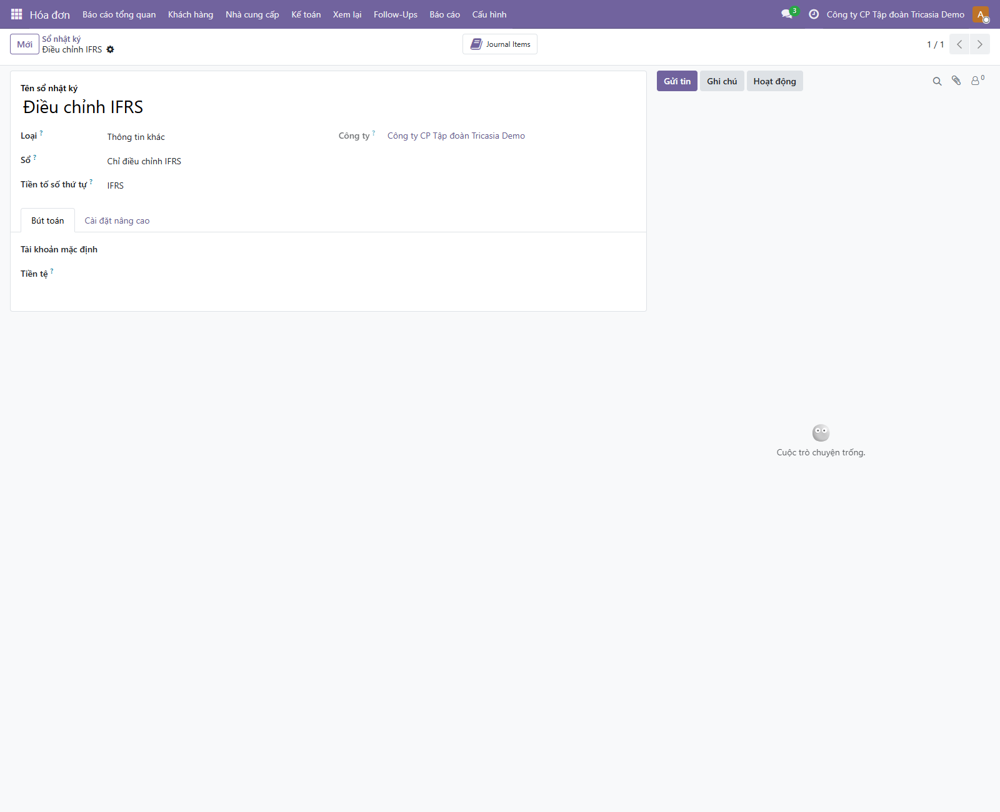
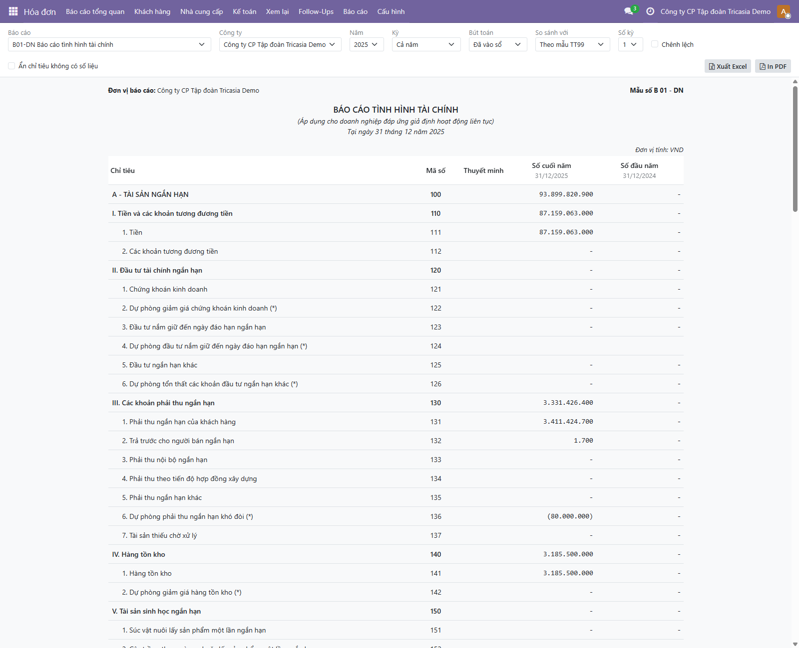
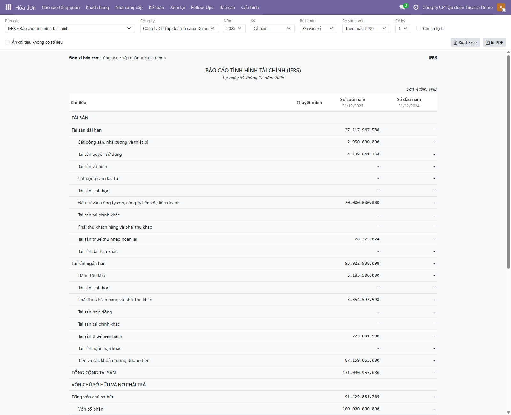
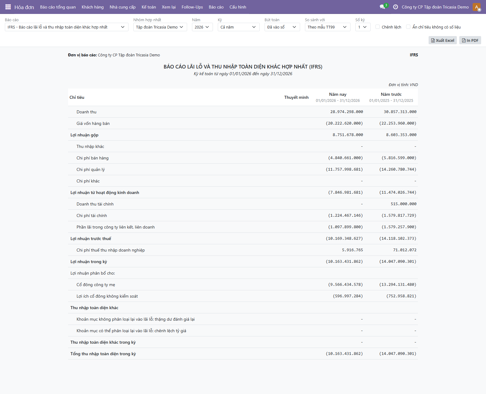

Báo cáo VAS và IFRS trên cùng một bộ sổ
| Tính năng | Lập báo cáo tài chính IFRS từ sổ kế toán VAS, kể cả báo cáo hợp nhất |
| Module | l10n_vn_ifrs (dựa trên l10n_vn_financial_statements, l10n_vn_consolidation) |
| Người đọc | BA, tư vấn triển khai, kế toán trưởng phía khách hàng |
| Phiên bản | 19.0.1.0.0 — 19/10/2026 |
Nội dung
- Bối cảnh và mục tiêu
- Nguyên lý: một bộ sổ, hai bộ báo cáo
- Thuật ngữ
- Quy trình hằng kỳ
- Cấu hình
- Màn hình và thao tác
- Danh mục báo cáo IFRS
- Ví dụ số liệu: từ VAS sang IFRS
- Hợp nhất theo IFRS
- Quy tắc nghiệp vụ
- Tiêu chí nghiệm thu
- Câu hỏi thường gặp
- Giới hạn và lộ trình
1. Bối cảnh và mục tiêu
Nhiều doanh nghiệp tại Việt Nam, nhất là công ty có vốn nước ngoài hoặc công ty chuyển từ SAP sang, phải lập hai bộ báo cáo:
- VAS (Thông tư 99/2025): bắt buộc cho báo cáo tài chính nộp cơ quan nhà nước, quyết toán thuế, kiểm toán theo luật Việt Nam.
- IFRS: cho công ty mẹ nước ngoài, nhà đầu tư, ngân hàng, hoặc báo cáo hợp nhất tập đoàn.
Trên SAP, việc này thường dùng sổ cái song song (leading ledger và non-leading ledger). Odoo không có cơ chế này. Tính năng mô tả ở đây giải quyết bài toán theo cách đơn giản hơn, phù hợp với thực tế phần lớn doanh nghiệp Việt Nam:
Mục tiêu:
- Kế toán chỉ ghi nghiệp vụ hằng ngày một lần, theo VAS.
- Chênh lệch giữa hai chuẩn mực được ghi riêng, có thể truy vết, theo kỳ (tháng, quý, năm).
- Báo cáo VAS không bao giờ bị ảnh hưởng bởi bút toán IFRS.
- Xem, so sánh, xuất Excel, in PDF báo cáo IFRS giống hệt báo cáo VAS, cả báo cáo riêng và hợp nhất.
2. Nguyên lý: một bộ sổ, hai bộ báo cáo
flowchart LR OPS["Nghiệp vụ hằng ngày
hoá đơn, thanh toán, lương, khấu hao..."] --> J1[("Sổ nhật ký thường
Sổ = VAS và IFRS")] ADJ["Điều chỉnh IFRS theo kỳ
IFRS 16, IFRS 9, IAS 12..."] --> J2[("Sổ Điều chỉnh IFRS
Sổ = Chỉ điều chỉnh IFRS")] LOC["Bút toán chỉ có ở VAS
(nếu có)"] --> J3[("Sổ nhật ký riêng
Sổ = Chỉ VAS")] J1 --> VAS["Báo cáo VAS
B01, B02, B03, hợp nhất"] J3 --> VAS J1 --> IFRS["Báo cáo IFRS
tình hình tài chính, lãi lỗ, lưu chuyển tiền"] J2 --> IFRS
| Tiêu chí | SAP (sổ cái song song) | Odoo (cách làm này) |
|---|---|---|
| Ghi nghiệp vụ | Mỗi nghiệp vụ được ghi vào cả hai sổ | Ghi một lần theo VAS |
| Chênh lệch chuẩn mực | Ghi riêng ở sổ IFRS (non-leading) | Ghi ở sổ nhật ký "Điều chỉnh IFRS" |
| Hệ thống tài khoản | Có thể tách tài khoản theo sổ | Dùng chung chart VAS (TT99); báo cáo IFRS ánh xạ từ tài khoản VAS |
| Truy vết chênh lệch | So sánh hai sổ | Toàn bộ chênh lệch nằm trong một sổ nhật ký, xem ngay danh sách bút toán |
| Phù hợp khi | Chênh lệch nhiều, phát sinh liên tục | Chênh lệch tập trung ở một số khoản mục, điều chỉnh được theo kỳ (đa số doanh nghiệp) |
3. Thuật ngữ
| Thuật ngữ | Ý nghĩa |
|---|---|
| Sổ của sổ nhật ký | Trường mới trên mỗi sổ nhật ký (loại Tổng hợp), 3 giá trị:
• VAS và IFRS (mặc định): bút toán dùng cho cả hai bộ báo cáo — toàn bộ nghiệp vụ hằng ngày. • Chỉ điều chỉnh IFRS: chỉ cộng vào báo cáo IFRS. • Chỉ VAS: chỉ có trong báo cáo VAS (ví dụ khoản dự phòng theo quy định thuế mà IFRS không công nhận). |
| Sổ của mẫu báo cáo | Mẫu báo cáo đọc sổ VAS hay IFRS. Các mẫu B01/B02/B03 đọc VAS; các mẫu IFRS đọc IFRS. |
| Bút toán điều chỉnh IFRS | Bút toán ghi vào sổ "Điều chỉnh IFRS" để chuyển số VAS thành số IFRS. Dùng tài khoản trong chart VAS. |
| Bút toán tự đảo | Bút toán ghi cuối kỳ và đảo ngược đầu kỳ sau (ví dụ dự phòng tổn thất tín dụng dự kiến, thuế hoãn lại). Mỗi kỳ ghi lại theo số mới. |
| Mẫu IFRS | Báo cáo trình bày theo IAS 1 / IAS 7, không có cột "Mã số" như mẫu Việt Nam. |
4. Quy trình hằng kỳ
flowchart TD A["1. Kế toán viên ghi nghiệp vụ hằng ngày
(sổ nhật ký thường)"] --> B["2. Khoá sổ VAS cuối kỳ
đối chiếu, kết chuyển"] B --> C["3. Lập báo cáo VAS
B01, B02, B03 — nộp theo luật"] B --> D["4. Chuyên viên IFRS lập bút toán điều chỉnh
vào sổ Điều chỉnh IFRS"] D --> E["5. Kế toán trưởng duyệt bút toán điều chỉnh"] E --> F["6. Xem báo cáo IFRS
kiểm tra cảnh báo, so sánh với VAS"] F --> G["7. Xuất Excel / In PDF
gửi công ty mẹ, nhà đầu tư"] F -->|"Lệch, cần sửa"| D
Danh mục điều chỉnh IFRS thường gặp (chi tiết ở mục 8):
| Chuẩn mực | Nội dung điều chỉnh | Tần suất |
|---|---|---|
| IFRS 16 Thuê tài sản | VAS ghi chi phí thuê; IFRS ghi tài sản quyền sử dụng và nợ thuê, khấu hao và lãi | Ghi nhận ban đầu + hằng tháng |
| IFRS 9 Công cụ tài chính | Dự phòng phải thu theo tổn thất tín dụng dự kiến thay cho dự phòng theo quy định VAS | Mỗi kỳ báo cáo, tự đảo |
| IAS 12 Thuế thu nhập | Thuế hoãn lại trên các chênh lệch do điều chỉnh IFRS | Mỗi kỳ báo cáo, tự đảo |
| IFRS 15, IAS 40, IAS 36, IAS 19… | Doanh thu theo nghĩa vụ thực hiện, giá trị hợp lý, suy giảm giá trị, phúc lợi nhân viên | Theo phát sinh |
5. Cấu hình
- Cài module
l10n_vn_ifrs. Mỗi công ty dùng chart Việt Nam được tạo sẵn sổ nhật ký "Điều chỉnh IFRS" (mã IFRS, Sổ = Chỉ điều chỉnh IFRS). - Không cần tạo hệ thống tài khoản riêng cho IFRS: bút toán điều chỉnh dùng tài khoản VAS (ví dụ tài sản quyền sử dụng ghi vào 212/2142, nợ thuê vào 34121/34122).
- Nếu có bút toán chỉ đúng theo VAS, tạo một sổ nhật ký Tổng hợp riêng và đặt Sổ = Chỉ VAS.
- Phân quyền: người lập điều chỉnh IFRS cần quyền ghi sổ vào sổ "Điều chỉnh IFRS"; người xem báo cáo cần quyền xem kế toán. Với báo cáo hợp nhất, cấp quyền vào mọi công ty trong nhóm.
- Ngôn ngữ: bật cả Tiếng Việt và Tiếng Anh để in báo cáo IFRS bằng tiếng Anh gửi công ty mẹ.

6. Màn hình và thao tác
Menu: Kế toán → Báo cáo → Báo cáo tài chính VAS → Xem báo cáo. Ô "Báo cáo" chia 4 nhóm:
| Nhóm | Báo cáo |
|---|---|
| VAS - Báo cáo riêng | B01-DN, B02-DN, B03-DN (trực tiếp, gián tiếp) |
| VAS - Báo cáo hợp nhất | B01-DN/HN, B02-DN/HN |
| IFRS - Báo cáo riêng | Tình hình tài chính; Lãi lỗ và thu nhập toàn diện khác; Lưu chuyển tiền tệ |
| IFRS - Báo cáo hợp nhất | Tình hình tài chính hợp nhất; Lãi lỗ và thu nhập toàn diện khác hợp nhất |
Các thao tác giống báo cáo VAS: chọn công ty hoặc nhóm hợp nhất, năm, kỳ, so sánh với kỳ trước hoặc cùng kỳ năm trước (tối đa 6 kỳ), hiện chênh lệch và %, bấm vào một dòng để xem bút toán, xuất Excel, in PDF. Đổi bộ lọc là số liệu tự tính lại.


7. Danh mục báo cáo IFRS
7.1 Báo cáo tình hình tài chính (IAS 1)
Mỗi dòng IFRS là tổng của các chỉ tiêu chi tiết của B01-DN. Mọi tài khoản thuộc đúng một dòng IFRS, nên báo cáo luôn cân và không bỏ sót số dư (hệ thống tự kiểm tra khi sinh mẫu).
| Dòng IFRS | Lấy từ chỉ tiêu B01-DN |
|---|---|
| Bất động sản, nhà xưởng và thiết bị | 222, 223 (TSCĐ hữu hình) + 252 (XDCB dở dang) |
| Tài sản quyền sử dụng | 225, 226 (TSCĐ thuê tài chính và bút toán IFRS 16) |
| Tài sản vô hình · Bất động sản đầu tư · Tài sản sinh học | 228–229 · 241–242 · 151–153, 232–238 |
| Đầu tư vào công ty con, liên kết, liên doanh | 261, 262 |
| Tài sản tài chính khác | 121–126, 164, 263–266 |
| Phải thu khách hàng và phải thu khác | 131, 132, 133, 135–137 (ngắn hạn); 211–216 (dài hạn) |
| Tài sản hợp đồng · Hàng tồn kho · Tiền | 134 · 141–142 · 111–112 |
| Vốn cổ phần · Thặng dư · Cổ phiếu quỹ · Quỹ khác · Lợi nhuận giữ lại | 411 · 412 · 415 · 413, 414, 416–419 · 420 |
| Vay (ngắn hạn, dài hạn) | Vay và trái phiếu (3411x, 3431x, 3432), giao dịch mua bán lại trái phiếu |
| Nợ thuê (ngắn hạn, dài hạn) | Nợ thuê tài chính 34121 / 34122 — tách riêng khỏi vay theo IFRS 16 |
| Phải trả người bán và phải trả khác · Nợ phải trả hợp đồng | 311, 313, 315–317, 320, 323, 324 · 312, 318, 319 |
| Thuế, dự phòng, thuế hoãn lại, nợ dài hạn khác | 314, 322, 342, 343, 331–338, 341, 344 |
7.2 Báo cáo lãi lỗ và thu nhập toàn diện khác
Doanh thu · Giá vốn · Lợi nhuận gộp · Thu nhập khác · Chi phí bán hàng · Chi phí quản lý · Chi phí khác · Lợi nhuận từ hoạt động kinh doanh · Doanh thu tài chính · Chi phí tài chính · (hợp nhất: phần lãi công ty liên kết) · Lợi nhuận trước thuế · Thuế · Lợi nhuận trong kỳ · (hợp nhất: phân bổ cho cổ đông công ty mẹ và cổ đông không kiểm soát) · Thu nhập toàn diện khác (chênh lệch đánh giá lại TK 412, chênh lệch tỷ giá TK 413) · Tổng thu nhập toàn diện. Chi phí trình bày số âm.
7.3 Báo cáo lưu chuyển tiền tệ (IAS 7)
Phương pháp trực tiếp, cùng cách phân loại dòng tiền với B03-DN: mỗi khoản tiền được xếp theo tài khoản đối ứng trên sổ. Các bút toán điều chỉnh IFRS không chạm tài khoản tiền, nên tổng tiền theo IFRS bằng tiền theo VAS.
8. Ví dụ số liệu: từ VAS sang IFRS
Dữ liệu demo (DB vn_acc_full), Công ty CP Tập đoàn Tricasia Demo, năm 2025. Đơn vị: triệu đồng.
8.1 Ba điều chỉnh của năm 2025
| Điều chỉnh | Tình huống | Bút toán ở sổ "Điều chỉnh IFRS" |
|---|---|---|
| IFRS 16 thuê văn phòng | Thuê 5 năm từ 01/01/2025, trả trước 1.200/năm, lãi suất 8%. VAS: ghi chi phí trả trước (2421) rồi phân bổ 100/tháng vào 6427. | 02/01/2025: Nợ 212 5.174,5 / Có 34122 3.974,5 / Có 2421 1.200 Hằng tháng: Nợ 2421 / Có 6427 100 (đảo chi phí thuê VAS); Nợ 6424 / Có 2142 86,2 (khấu hao); Nợ 6351 / Có 34122 (lãi) 31/12: chuyển 1.200 sang nợ thuê ngắn hạn 34121 |
| IFRS 9 tổn thất tín dụng dự kiến | Dự phòng theo IFRS = 2% công nợ phải thu; VAS đã trích 80. | 31/12/2025: ghi phần chênh lệch (năm 2025 là hoàn nhập 23,2), tự đảo 01/01/2026 |
| IAS 12 thuế hoãn lại | 20% trên tổng chênh lệch lợi nhuận do điều chỉnh IFRS | 31/12/2025: Nợ 243 / Có 8212 28,3, tự đảo 01/01/2026 |
8.2 Đối chiếu lợi nhuận năm 2025
| Khoản mục | Triệu đồng |
|---|---|
| Lợi nhuận sau thuế theo VAS (B02-DN mã 60) | (8.456,8) |
| + Đảo chi phí thuê văn phòng theo VAS (IFRS 16) | 1.200,0 |
| − Khấu hao tài sản quyền sử dụng (IFRS 16) | (1.034,9) |
| − Lãi nợ thuê (IFRS 16) | (329,9) |
| + Hoàn nhập dự phòng theo tổn thất tín dụng dự kiến (IFRS 9) | 23,2 |
| + Thu nhập thuế hoãn lại (IAS 12) | 28,3 |
| Lợi nhuận trong kỳ theo IFRS | (8.570,1) |
8.3 Đối chiếu tình hình tài chính tại 31/12/2025
| Khoản mục | VAS | IFRS | Chênh lệch | Nguyên nhân |
|---|---|---|---|---|
| Tài sản quyền sử dụng | – | 4.139,6 | 4.139,6 | IFRS 16 |
| Tài sản thuế thu nhập hoãn lại | – | 28,3 | 28,3 | IAS 12 |
| Nợ thuê (ngắn hạn 1.200 + dài hạn 3.104,4) | – | 4.304,4 | 4.304,4 | IFRS 16 |
| Tiền và tương đương tiền | 87.159,1 | 87.159,1 | – | Điều chỉnh không chạm tiền |
| Tổng tài sản | 126.849,8 | 131.041,0 | 4.191,2 | |
| Tổng vốn chủ sở hữu | 91.543,2 | 91.429,9 | (113,3) | = chênh lệch lợi nhuận mục 8.2 |
9. Hợp nhất theo IFRS
Báo cáo hợp nhất IFRS dùng chung nhóm hợp nhất với VAS (công ty mẹ, công ty con, công ty liên kết, tỷ lệ lợi ích, ngày mua). Khác biệt:
| Nội dung | VAS (TT202/TT43) | IFRS |
|---|---|---|
| Số liệu các công ty thành viên | Sổ VAS | Sổ VAS + điều chỉnh IFRS của từng công ty |
| Lợi thế thương mại | Phân bổ đều tối đa 10 năm | Không phân bổ, kiểm tra suy giảm giá trị (IFRS 3, IAS 36) |
| Tài sản thuần tại ngày mua | Vốn chủ VAS của công ty con | Vốn chủ VAS + điều chỉnh IFRS đã ghi đến ngày mua |
| Lợi ích cổ đông không kiểm soát | Theo vốn chủ VAS | Theo vốn chủ IFRS |
| Bút toán loại trừ nội bộ | Giống nhau: đầu tư – vốn, công nợ, doanh thu – chi phí, cổ tức, lãi chưa thực hiện | |
Demo tại 30/09/2026: lợi thế thương mại theo VAS còn 4.364 triệu (sau 18 tháng phân bổ); theo IFRS là 5.150 triệu (không phân bổ, tính trên tài sản thuần IFRS tại ngày mua).

10. Quy tắc nghiệp vụ
- Báo cáo VAS đọc mọi sổ nhật ký trừ sổ "Chỉ điều chỉnh IFRS". Báo cáo IFRS đọc mọi sổ trừ sổ "Chỉ VAS".
- Bút toán điều chỉnh IFRS dùng tài khoản VAS; báo cáo IFRS tự xếp chúng vào đúng dòng theo ánh xạ ở mục 7.
- Điều chỉnh mang tính ước tính tại ngày báo cáo (ECL, thuế hoãn lại) nên ghi dạng tự đảo đầu kỳ sau, để mỗi kỳ chỉ phản ánh số mới nhất.
- Điều chỉnh không chạm tài khoản tiền: tiền theo IFRS luôn bằng tiền theo VAS.
- Báo cáo cảnh báo khi: tổng tài sản khác tổng nguồn vốn; có tài khoản có số dư nhưng chưa vào dòng nào; tiền cuối kỳ của báo cáo lưu chuyển tiền khác số dư tiền trên sổ.
- Mẫu báo cáo IFRS sửa được công thức (nhân bản mẫu rồi sửa) nếu khách hàng có cách trình bày riêng.
11. Tiêu chí nghiệm thu
| # | Tiêu chí | Kết quả demo |
|---|---|---|
| 1 | Sau khi ghi bút toán vào sổ "Điều chỉnh IFRS", mọi báo cáo VAS (B01, B02, B03, hợp nhất) không đổi | Đạt |
| 2 | Báo cáo IFRS tình hình tài chính cân (tổng tài sản = tổng nguồn vốn), không cảnh báo tài khoản chưa ánh xạ | Đạt |
| 3 | Vốn chủ IFRS = vốn chủ VAS + tổng ảnh hưởng của sổ điều chỉnh IFRS | Đạt |
| 4 | Lợi nhuận IFRS = lợi nhuận VAS + lãi lỗ của sổ điều chỉnh IFRS trong kỳ | Đạt |
| 5 | Bút toán ở sổ "Chỉ VAS" không xuất hiện trên báo cáo IFRS | Đạt |
| 6 | Hợp nhất IFRS: lợi thế thương mại không phân bổ; lợi ích cổ đông không kiểm soát = tỷ lệ × vốn chủ IFRS của công ty con | Đạt |
| 7 | Xem, so sánh kỳ, xuất Excel, in PDF báo cáo IFRS bằng tiếng Việt và tiếng Anh | Đạt |
12. Câu hỏi thường gặp
| Câu hỏi | Trả lời |
|---|---|
| Bút toán IFRS có ảnh hưởng tờ khai thuế, báo cáo nộp cơ quan nhà nước? | Không. Báo cáo VAS luôn bỏ sổ "Điều chỉnh IFRS". Hoá đơn, thuế GTGT, thuế TNDN vẫn theo sổ VAS. |
| Có cần hệ thống tài khoản riêng cho IFRS? | Không. Dùng chart VAS; nếu cần chi tiết hơn có thể thêm tài khoản con (TT99 cho phép), báo cáo IFRS tự nhận theo đầu mã. |
| Ai nhập bút toán điều chỉnh? Có tự động không? | Hiện do chuyên viên IFRS / kế toán trưởng nhập (có thể dùng bút toán định kỳ, tự đảo của Odoo). Công cụ tự sinh bút toán IFRS 16 từ hợp đồng thuê nằm trong lộ trình. |
| Xem chi tiết một dòng IFRS được không? | Được. Bấm vào dòng để mở danh sách bút toán của các tài khoản tạo nên dòng đó, gồm cả bút toán điều chỉnh. |
| Công ty mẹ yêu cầu báo cáo IFRS bằng USD? | Chưa hỗ trợ chuyển đổi ngoại tệ khi hợp nhất (IAS 21); hiện mọi công ty trong nhóm phải cùng tiền tệ. Nằm trong lộ trình. |
| Chuyển từ SAP sang thì số dư đầu kỳ IFRS xử lý thế nào? | Số dư VAS nhập vào sổ thường; phần chênh lệch IFRS luỹ kế tại ngày chuyển đổi nhập một bút toán vào sổ "Điều chỉnh IFRS". |
13. Giới hạn và lộ trình
- Ánh xạ dòng IFRS được dựng sẵn từ chart VAS; khi triển khai cho khách thật, kế toán / kiểm toán nên duyệt lại cách xếp dòng.
- Chưa có: chuyển đổi báo cáo ngoại tệ khi hợp nhất (IAS 21); báo cáo thay đổi vốn chủ sở hữu và thuyết minh IFRS; lãi trên cổ phiếu.
- Báo cáo lưu chuyển tiền IFRS chưa tự chuyển tiền thuê sang hoạt động tài chính (xem mục 7.3).
- Điều chỉnh IFRS nhập tay. Lộ trình đề xuất: công cụ hợp đồng thuê tự sinh bút toán IFRS 16; tính ECL theo tuổi nợ; tính thuế hoãn lại tự động.
- Hai sổ (VAS, IFRS). Nếu khách cần thêm chuẩn khác (ví dụ US GAAP) có thể mở rộng cùng cơ chế.